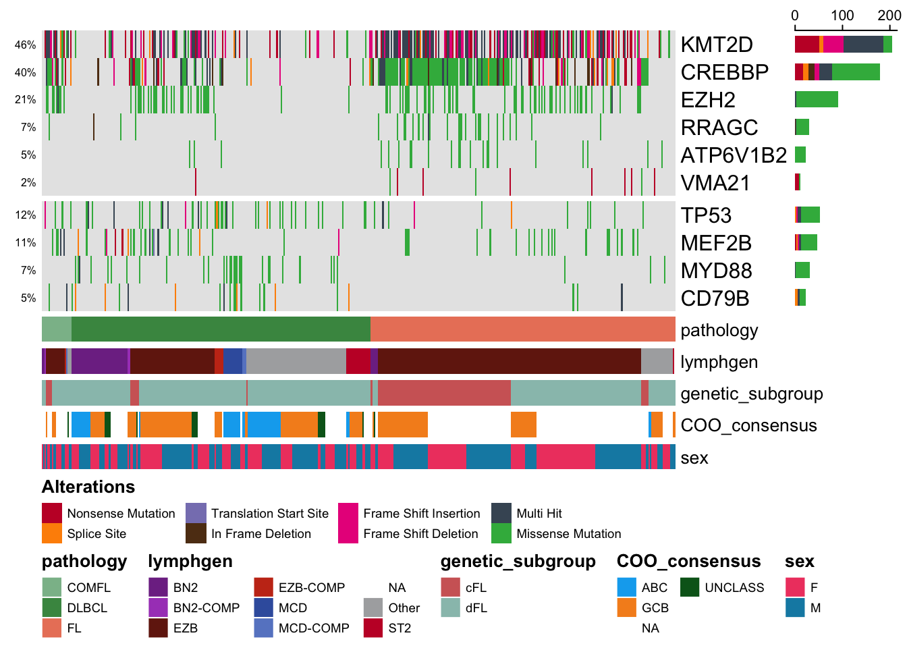
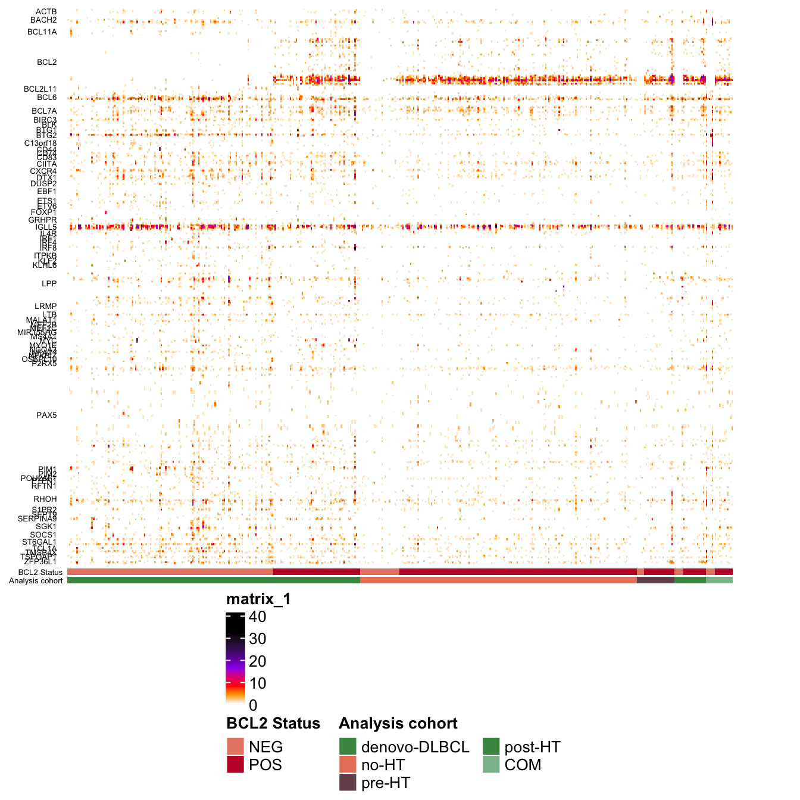
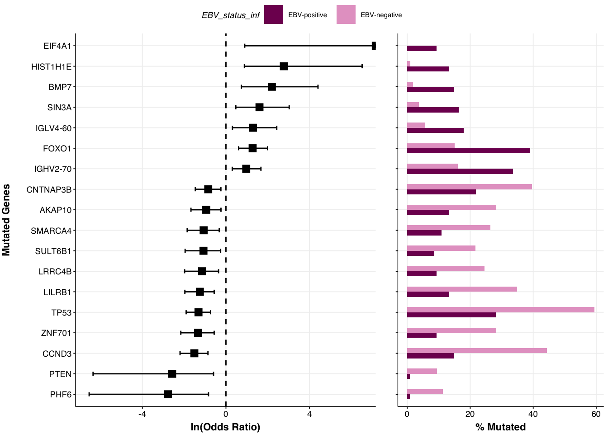
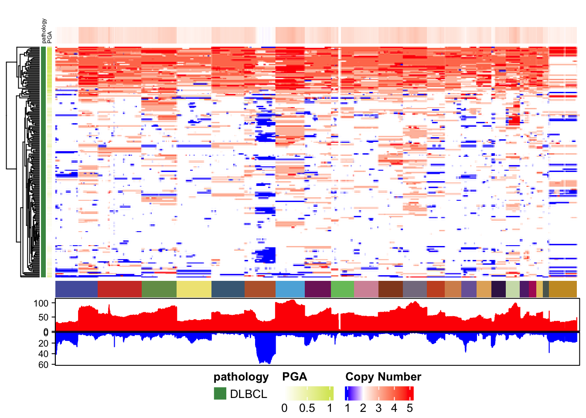
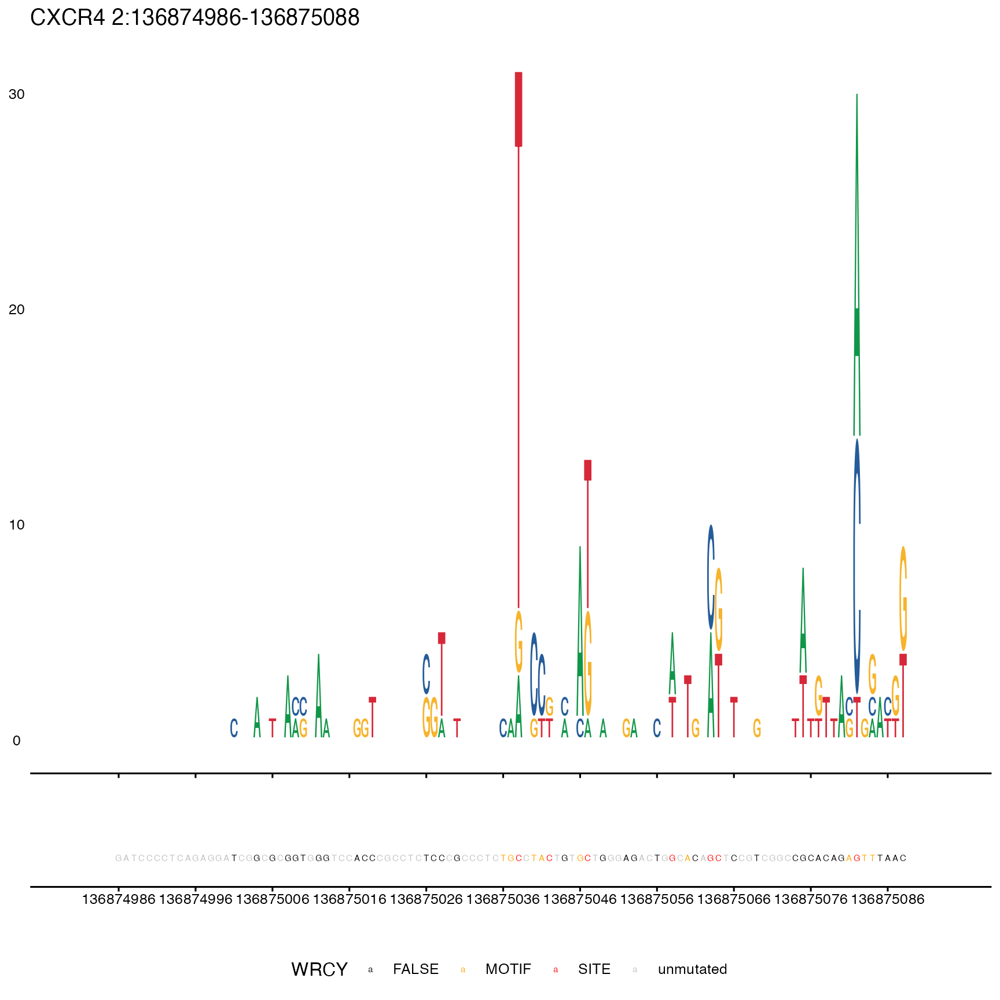
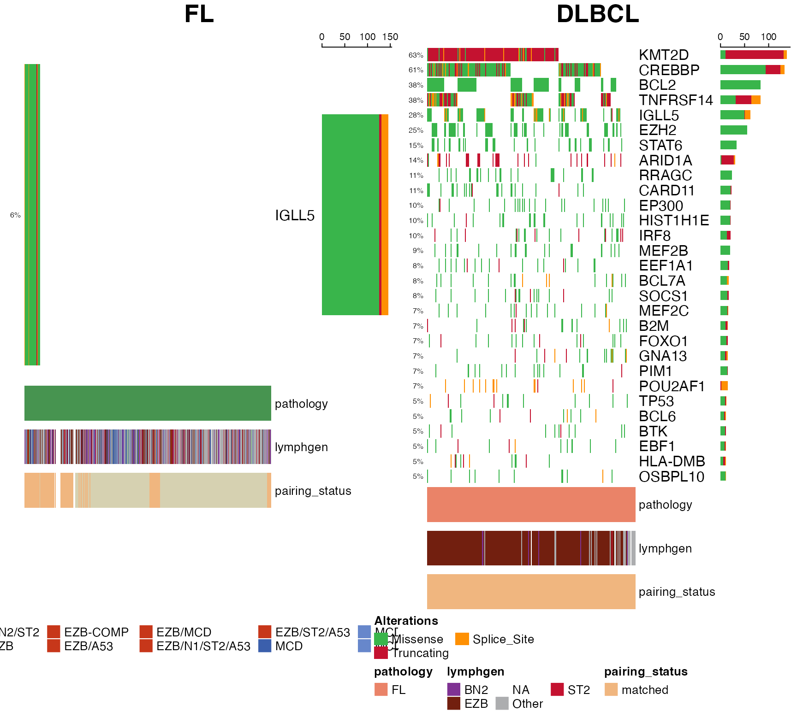
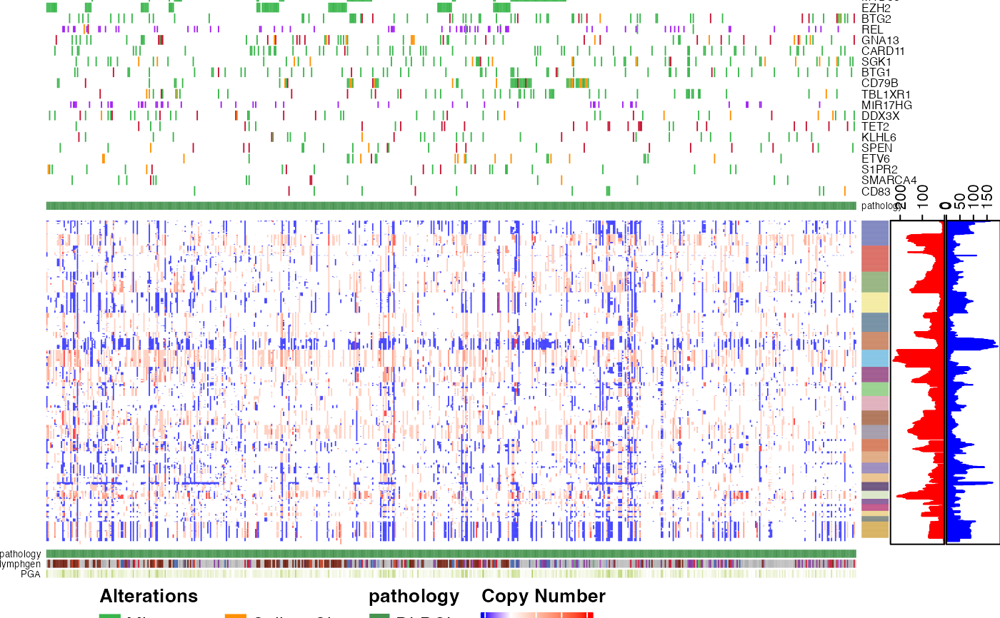

GAMBLR.viz
If you find MAFtools insufficient for your needs but don’t have the time or patience to master the nuances of ComplexHeatmap, GAMBLR.viz might be right for you.
What it does
The over-arching goal of GAMBLR.viz is to facilitate exploratory data analysis in cancer genomics studies by reducing the barrier to generating eye-pleasing representations of standard data types. This package was inspired by similar resources such as MAFtools. For our work, we found the available tools were insufficient for our needs. In particular, the visualizations produced by GAMBLR.viz cater to some of the unique genetic features of B-cell lymphomas. For example, mutation patterns in non-coding regions due to aberrant somatic hypermutation. We also provide convenient resources such as colour palettes that allow data and metadata in your figures to have consistent aesthetics.
GAMBLR family
GAMBLR.viz is part of a larger family of R tools for the analysis of lymphoma genomic data (the GAMBLRverse, if you will). GAMBLR began as a toolkit for analysts participating in the Genomic Analysis of Mature B-cell Lymphomas project, led by the Morin Lab at BC Cancer and Simon Fraser University.
GAMBLR.viz intends to provide straightfoward ways to mine cancer genomic results while leveraging the conveneince features afforded by other members of the GAMBLR family. A user can analyze and explore B-cell lymphoma genomics data relying entirely on GAMBLR.viz and the rest of the GAMBLR packages. We continue to develop more visualization tools, as well as improve their functionality.
/$$$$$$ /$$$$$$ /$$ /$$ /$$$$$$$ /$$ .:::::::
/$$__ $$ /$$__ $$ | $$$ /$$$ | $$__ $$ | $$ .:: .::
| $$ \__/ | $$ \ $$ | $$$$ /$$$$ | $$ \ $$ | $$ .:: .::
| $$ /$$$$ | $$$$$$$$ | $$ $$/$$ $$ | $$$$$$$ | $$ <- .: .::
| $$|_ $$ | $$__ $$ | $$ $$$| $$ | $$__ $$ | $$ .:: .::
| $$ \ $$ | $$ | $$ | $$\ $ | $$ | $$ \ $$ | $$ .:: .::
| $$$$$$/ | $$ | $$ | $$ \/ | $$ | $$$$$$$/ | $$$$$$$$ .:: .::
\______/ |__/ |__/ |__/ |__/ |_______/ |________/
~GENOMIC~~~~~~~~~~~~~OF~~~~~~~~~~~~~~~~~B-CELL~~~~~~~~~~~~~~~~~~IN~~~~~~
~~~~~~~~~~~~ANALYSIS~~~~~~MATURE~~~~~~~~~~~~~~~~~~~LYMPHOMAS~~~~~~~~~~R~ Use cases
You can use GAMBLR.viz at any step of your lymphoma data analysis workflow, from initial data exploration to preparation of manuscript-ready figures.
GAMBLR.viz helps with:
- generate publication-ready plots in a simple and reproducible manner.
- one-stop shop to generate high-level or region-specific visualizations for genomic data analysis.
- apply consistent coloring schemes and pallettes for different types of data and metadata.
- overcome learning curve using individual packages commonly implemented in the data visualization field.
Gallery
Tutorials




Functions

mutation_hotspot_logo
prettyCoOncoplot
prettyStackedOncoplotCommunity
Community discussions primarily happen through issue submission on GitHub.